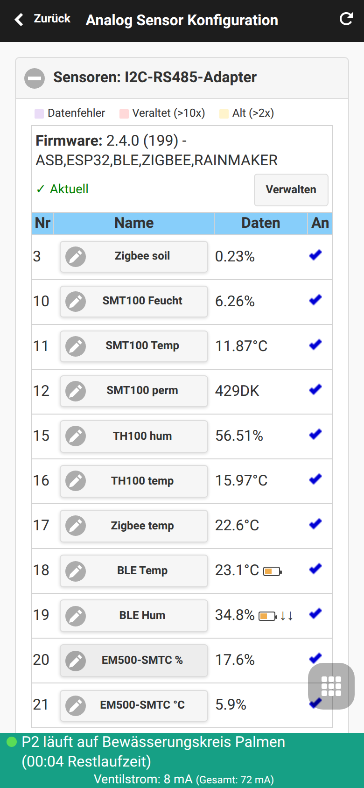
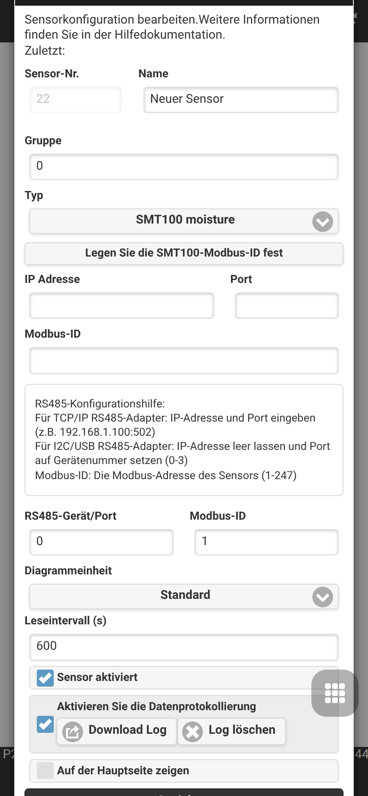
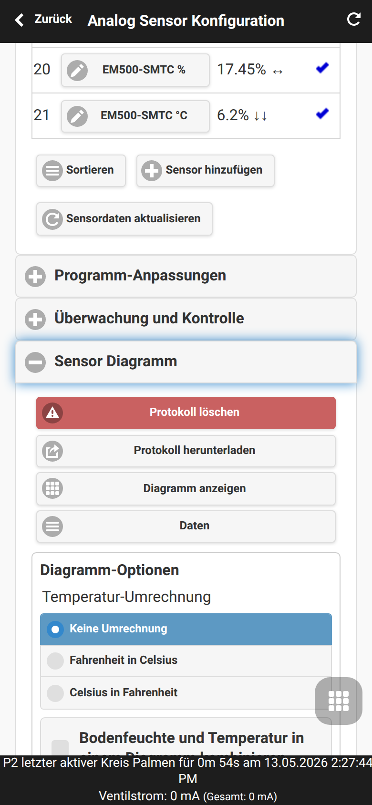
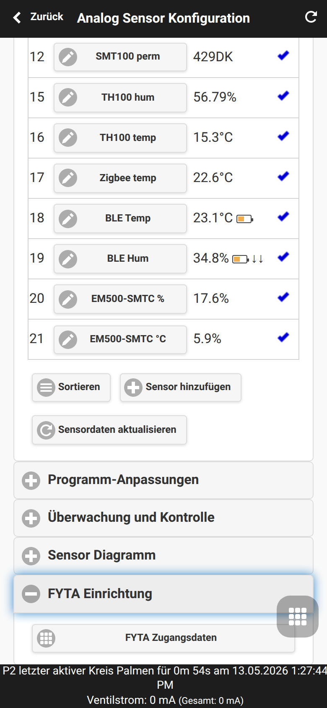
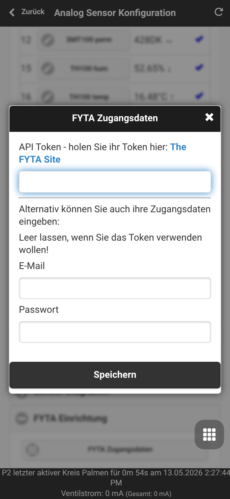
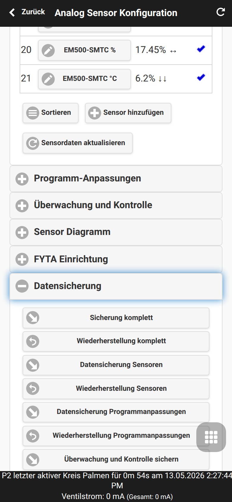

Analog Sensor Konfiguration
Die Analog Sensor Konfiguration ist der OpenSprinklerPro-UI-Bereich zum Definieren von Sensorquellen und zum Verwenden ihrer Werte in der Bewässerungsautomation. Öffnen Sie ihn über das Fußmenü mit Analog Sensor Konfiguration.

Verwandte Seiten: Sensor-Automation und Monitore, FYTA-Sensoren, OpenSprinklerPro-Erweiterung, API- und Plattform-Ergänzung.
Sensordefinitionen
Der erste Abschnitt definiert die Sensorliste. Jede Zeile enthält Sensornummer, Name, aktuellen Wert und Aktivstatus. Sensor hinzufügen öffnet den Editor für einen neuen Sensor; bestehende Sensoren werden über den Sensornamen bearbeitet.

Editor-Felder
| Feld | Bedeutung |
|---|---|
| Nummer, Name und Gruppe | Identifizieren den Sensor in Listen, Diagrammen, Programm-Anpassungen und Monitoren. Gruppen dienen zum Sortieren und Filtern zusammengehöriger Sensoren. |
| Typ | Wählt Treiber oder virtuelle Quelle aus. Der Typ bestimmt, welche Zusatzfelder angezeigt werden. |
| Einheit und Format | Legt fest, wie Werte angezeigt, protokolliert und verglichen werden. Die Einheit sollte zum physikalischen Wert oder zur externen Datenquelle passen. |
| Intervall, Log und Anzeigen | Das Intervall steuert die Aktualisierung. Log aktiviert die Speicherung für Diagramme; Anzeigen steuert die Sichtbarkeit in Übersichten. |
| Bus, Adresse und Kanal | Für RS485/Modbus, ASB und OSPi-Analogeingänge zur Auswahl von Hardwarebus, Geräteadresse oder Analogkanal. |
| Skalierung für benutzerdefinierte Sensoren | Für eigene Analogsensoren wird hier die Umrechnung von Rohspannung/ADC-Wert in den endgültigen Messwert eingetragen. |
| MQTT-Topic und Filter | MQTT-Sensoren abonnieren ein Topic und extrahieren optional einen Wert aus JSON oder Text. |
| Quellsensorliste | Gruppensensoren berechnen einen neuen Wert aus ausgewählten Quellsensoren. Die Quellen sollten kompatible Einheiten verwenden. |
RS485 / Modbus
Diese Typen sind für kabelgebundene Sensoren am RS485-Bus oder generische Modbus-RTU-Geräte. Stellen Sie Bus, Slave-Adresse, Register/Kanal und Leseintervall entsprechend dem angeschlossenen Gerät ein.
| Sensortyp | Erklärung |
|---|---|
| Truebner SMT100 RS485 Modbus, Feuchtemodus | Liest die Bodenfeuchte eines Truebner SMT100 über RS485/Modbus. Geeignet für Bewässerungsentscheidungen anhand des volumetrischen Wassergehalts. |
| Truebner SMT100 RS485 Modbus, Temperaturmodus | Liest den Temperaturkanal des SMT100. Nutzen Sie ihn, wenn Bodentemperatur protokolliert oder in Monitorregeln verwendet werden soll. |
| Truebner SMT100 RS485 Modbus, Permittivitätsmodus | Liest die dielektrische Permittivität des SMT100 für Diagnose oder erweiterte Bodenmodelle. |
| Truebner TH100 RS485 Modbus, Feuchtemodus | Liest die relative Luftfeuchte eines Truebner TH100. Nützlich für Gewächshaus- oder Umgebungskontrolle. |
| Truebner TH100 RS485 Modbus, Temperaturmodus | Liest die Temperatur des TH100 für Umgebung oder Einbauort. |
| RS485/MODBUS RTU generischer Sensor | Liest einen konfigurierbaren Modbus-RTU-Wert aus Fremdgeräten. Adresse, Register, Datenformat und Skalierung müssen zum Gerätehandbuch passen. |
Analog Sensor Board (ASB)
ASB-Typen lesen Spannungseingänge des OpenSprinkler-Analogboards und wandeln sie in physikalische Werte um. Wählen Sie den richtigen Kanal und nur Sensormodi, die zur Verdrahtung und Versorgungsspannung passen.
| Sensortyp | Erklärung |
|---|---|
| ASB - Spannungsmodus 0..5V | Gibt die gemessene ASB-Eingangsspannung direkt im Bereich 0 bis 5 V aus. Geeignet für Kalibrierung oder Sensoren mit eigener Umrechnung. |
| ASB - 0..3,3V zu 0..100% | Wandelt eine Eingangsspannung von 0 bis 3,3 V in Prozent um. Nützlich für generische Pegel- oder Feuchtesignale. |
| ASB - SMT50 Feuchtemodus | Wandelt den Analogausgang eines Truebner SMT50 in Bodenfeuchte um. |
| ASB - SMT50 Temperaturmodus | Wandelt den Temperaturausgang des SMT50 in einen Temperaturwert um. |
| ASB - SMT100-analog Feuchtemodus | Wandelt den analogen Feuchteausgang eines Truebner SMT100 um. |
| ASB - SMT100-analog Temperaturmodus | Wandelt den analogen Temperaturausgang eines Truebner SMT100 um. |
| ASB - Vegetronix VH400 | Wandelt den Ausgang des Vegetronix VH400 in Bodenfeuchte um. |
| ASB - Vegetronix THERM200 | Wandelt den Ausgang des Vegetronix THERM200 in Temperatur um. |
| ASB - Vegetronix AquaPlumb | Wandelt den Ausgang des Vegetronix AquaPlumb für Wassererkennung oder Füllstands-Messungen um. |
| ASB - benutzerdefinierter Sensor | Nutzt eigene Skalierung für Sensoren ohne eingebaute Umrechnung. Einheit, Anzeigeformat und Umrechnung sorgfältig festlegen, bevor der Wert automatisiert wird. |
OSPi-Analogeingänge
Diese Typen sind für Analogeingänge auf OSPi-/Raspberry-Pi-Installationen. Auf reinen ESP-Controllern ohne passende Analoghardware werden sie nicht verwendet.
| Sensortyp | Erklärung |
|---|---|
| OSPi-Analogeingang - Spannungsmodus 0..3,3V | Gibt die gemessene Eingangsspannung direkt im Bereich 0 bis 3,3 V aus. |
| OSPi-Analogeingang - 0..3,3V zu 0..100% | Wandelt einen 0- bis 3,3-V-Eingang in Prozent für generische Analogsensoren um. |
| OSPi-Analogeingang - SMT50 Feuchtemodus | Wandelt einen an OSPi angeschlossenen SMT50-Feuchteausgang um. |
| OSPi-Analogeingang - SMT50 Temperaturmodus | Wandelt einen an OSPi angeschlossenen SMT50-Temperaturausgang um. |
| Interne Raspberry-Pi-Temperatur | Liest die CPU-Temperatur des Raspberry Pi. Als Diagnosesensor für OSPi-Gehäuse oder Temperaturprüfung geeignet. |
| Interne ESP32-Temperatur | Liest den internen ESP32-Temperatursensor, sofern unterstützt. Als Controllerdiagnose verwenden, nicht als kalibrierte Umgebungstemperatur. |
Funk-, Cloud- und Remote-Quellen
Diese Typen empfangen Werte aus Funkintegrationen, Cloud-Diensten, MQTT oder einem anderen OpenSprinkler-Controller. Prüfen Sie die Plattformverfügbarkeit: Zigbee und BLE benötigen passende ESP32-Builds, FYTA benötigt Cloud-Zugangsdaten, MQTT eine Broker-Konfiguration.
| Sensortyp | Erklärung |
|---|---|
| Zigbee-Sensor | Ordnet einen Wert eines gekoppelten Zigbee-Geräts zu, z. B. Temperatur, Luftfeuchte oder Bodenfeuchte. Gerät und Messwert auswählen. |
| BLE-Sensor | Liest einen unterstützten Bluetooth-Low-Energy-Sensor. Scanintervall und Gerät so wählen, dass Aktualität und Funklast passen. |
| FYTA-Feuchtesensor | Importiert Bodenfeuchte eines FYTA-Pflanzensensors nach der FYTA-Einrichtung. |
| FYTA-Temperatursensor | Importiert Temperatur eines FYTA-Pflanzensensors nach der FYTA-Einrichtung. |
| MQTT-Abonnement | Abonniert ein MQTT-Topic und parst den empfangenen Wert. Topic, optionalen JSON-/Textfilter, Einheit und Timeout-Verhalten konfigurieren. |
| Remote-OpenSprinkler-Sensor | Liest einen Sensor von einem anderen OpenSprinkler-Controller. Remote-URL/Controller und Quellsensornummer konfigurieren. |
Wetterdaten
Wettersensoren stellen Werte bereit, die dem Controller bereits aus dem konfigurierten Wetterdienst bekannt sind. Wählen Sie den Einheitstyp passend zu Regeln und Diagrammen.
| Sensortyp | Erklärung |
|---|---|
| Wetterdaten - Temperatur (°F) | Wetterdienst-Temperatur in Grad Fahrenheit. |
| Wetterdaten - Temperatur (°C) | Wetterdienst-Temperatur in Grad Celsius. |
| Wetterdaten - Luftfeuchte (%) | Relative Luftfeuchte des Wetterdiensts in Prozent. |
| Wetterdaten - Niederschlag (inch) | Niederschlag des Wetterdiensts in Zoll. |
| Wetterdaten - Niederschlag (mm) | Niederschlag des Wetterdiensts in Millimetern. |
| Wetterdaten - Wind (mph) | Windgeschwindigkeit des Wetterdiensts in Meilen pro Stunde. |
| Wetterdaten - Wind (kmh) | Windgeschwindigkeit des Wetterdiensts in Kilometern pro Stunde. |
| Wetterdaten - ETO | Referenz-Evapotranspiration als Kontextwert für Bewässerung. |
| Wetterdaten - Strahlung | Solarstrahlung aus der Wetterquelle, wenn verfügbar. |
Gruppensensoren
Gruppensensoren erzeugen einen aggregierten Wert aus anderen Sensoren. Wählen Sie Quellsensoren mit vergleichbaren Einheiten und Log-Intervallen, damit das Ergebnis sinnvoll ist.
| Sensortyp | Erklärung |
|---|---|
| Sensorgruppe mit Minimalwert | Meldet den niedrigsten aktuellen Wert der ausgewählten Quellsensoren. |
| Sensorgruppe mit Maximalwert | Meldet den höchsten aktuellen Wert der ausgewählten Quellsensoren. |
| Sensorgruppe mit Durchschnittswert | Meldet den arithmetischen Durchschnitt der ausgewählten Quellsensoren. |
| Sensorgruppe mit Summenwert | Meldet die Summe der ausgewählten Quellsensoren, z. B. kombinierte Regen- oder durchflussähnliche Werte. |
Diagnose
Diagnosesensoren stellen Controller-Zustandsdaten im gleichen Diagramm- und Monitorsystem wie Umweltsensoren bereit.
| Sensortyp | Erklärung |
|---|---|
| Freier Speicher | Meldet aktuell freien RAM. Monitore können Speicherdruck oder Lecks in Langzeittests erkennen. |
| Freier Speicherplatz | Meldet verbleibenden Speicherplatz, sofern unterstützt. Nützlich für Warnungen, bevor Logs oder Konfiguration das Dateisystem füllen. |
Programm-Anpassungen
Programm-Anpassungen skalieren die Bewässerungsdauer eines Programms anhand eines Sensorwerts. Typische Beispiele sind weniger Bewässerung bei hoher Bodenfeuchte oder mehr Bewässerung bei hoher Temperatur.


Anpassungsmodell
Jede Anpassung verbindet einen Sensor mit einem Bewässerungsprogramm und berechnet einen Prozentfaktor. Aktivieren Sie zunächst das Logging des Sensors und prüfen Sie den Wertebereich, bevor reale Bewässerung beeinflusst wird.
Anpassungstypen
| Typ | Verwendung |
|---|---|
LINEAR |
Skaliert kontinuierlich zwischen konfiguriertem unteren und oberen Punkt. |
DIGITAL_MIN |
Löst eine binäre Reduktion oder Sperre aus, wenn der Sensor unter einem Schwellwert liegt. |
DIGITAL_MAX |
Löst eine binäre Reduktion oder Sperre aus, wenn der Sensor über einem Schwellwert liegt. |
DIGITAL_MINMAX |
Wendet binäres Verhalten innerhalb oder außerhalb eines konfigurierten Bereichs an. |
Funktionsmodell und Formeln stehen unter Sensor-Automation und Monitore. MCP/API-Automation kann configure_adjustment verwenden; REST-Details stehen in der API- und Plattform-Ergänzung.
Monitore und lokale Warnungen
Überwachung und Kontrolle erstellt Schwellwert- und Logikregeln aus Sensoren. Monitore können lokale Warnungen erzeugen, Benachrichtigungsereignisse speisen und Bedingungen wie „Boden ist trocken“ und „Zeitfenster ist morgens“ kombinieren.


Regelaufbau
Monitorregeln wählen einen Sensor, vergleichen ihn mit einem Schwellwert oder Zustand und definieren, was bei erfüllter Bedingung geschehen soll. Klare Namen machen spätere Warnungen verständlich.
Logik und Zeitfenster
Monitortypen umfassen Schwellwerte, digitale Regen-/Bodensensorregeln, Logikkombinationen, Zeitfenster und entfernte Monitorzustände. Siehe Sensor-Automation und Monitore für das Funktionsmodell.
Sensor-Diagramm und Daten
Das Sensor Diagramm zeigt protokollierte Sensorwerte. Nutzen Sie es, um Messwerte zu prüfen, bevor diese für Programm-Anpassungen oder Monitore verwendet werden. Die UI kann außerdem Logs herunterladen oder die Datentabelle öffnen.

Diagramme lesen
Achten Sie auf fehlende Messpunkte, unerwartete Spitzen und falsch gewählte Einheiten. Vergleichen Sie verwandte Sensoren in derselben Gruppe, bevor sie automatische Entscheidungen steuern.
Daten herunterladen
Protokollierte Daten können heruntergeladen oder als Tabelle geprüft werden. Das hilft bei Kalibrierung, Fehlersuche und Weitergabe von Sensorkurven.
FYTA-Einrichtung
FYTA Einrichtung speichert FYTA-API-Token oder Login-Daten und ordnet FYTA-Pflanzensensoren OpenSprinkler-Sensoren zu. Details: FYTA-Sensoren.


Zugangsdaten
Tragen Sie API-Token oder Login-Daten ein, die Ihre Firmware-Version benötigt. Halten Sie Zugangsdaten privat und aktualisieren Sie sie, wenn sich der FYTA-Zugriff ändert.
Pflanzen zuordnen
Nach der Anmeldung werden FYTA-Pflanzenwerte für Feuchte und Temperatur OpenSprinkler-Sensoren zugeordnet, damit sie protokolliert, überwacht und für Anpassungen genutzt werden können.
Datensicherung und Wiederherstellung
Datensicherung exportiert oder stellt Sensor-Konfiguration, Programm-Anpassungen und Monitore getrennt vom allgemeinen Controller-Backup wieder her. Nutzen Sie dies vor größeren Sensoränderungen oder Firmwaretests.

Enthaltene Daten
Backups enthalten Sensordefinitionen, Anpassungsregeln und Monitorregeln. Sie ersetzen kein vollständiges Controller-Backup für andere Einstellungen.
Sicherer Wiederherstellungsablauf
Exportieren Sie vor vielen Änderungen ein Backup, stellen Sie nur Dateien aus vertrauenswürdigen Quellen wieder her und prüfen Sie Sensorwerte nach dem Restore, bevor automatische Anpassungen erneut aktiv genutzt werden.